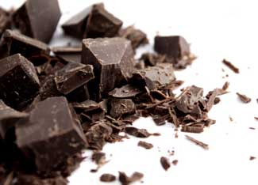

Sweet, bitter, spicy, smooth - these are just a few of the dozens of ways to describe chocolate.
But if you want really great chocolate, chocolate that makes you feel as good about buying it as it makes your tastebuds feel about meeting it, there are more decisions involved than simply what flavor makes your mouth water. To make the best decisions (and discover the best quality), consider a few questions such as: Where is it grown, how it is grown, and by whom? Does the farmer earn a living wage? Are pesticides used on the cacao trees?
These are tough, but important questions. The good news is we’ve made answering them easier for you.
Most of the chocolate on grocery store shelves isn’t anything like pure, real unadulterated chocolate. Filled with high fructose corn syrup (and, therefore, possibly mercury), grown with pesticides, and sometimes including wax and other decidedly unappetizing ingredients, common chocolate pales in comparison to that made with real food ingredients. If Big Name chocolate is the only chocolate you’ve tried, I’m sorry to inform you that you’ve not really had chocolate. Not the kind that’s worth its weight in silver (or even gold) or that Aztec emperor Moctezuma would offer to Spanish Conquistador Hernan Cortes. And certainly not the kind that merits its own diety, the Myan god of cacao farmers, Ekchuah.
So how do you find such chocolate and find answers to all those questions? Fortunately, there a couple of qualified certification logos you can look for that quickly and easily separate the bean from the husk: Fair Trade and Certified Organic.
According to Reonne Haslett, co-owner of Earth’s Sweet Pleasures chocolate company, Fair Trade means that farmers receive a guaranteed fair price and good labor conditions, including safe working conditions and fair living wages. Plus, middlemen are eliminated, which allows farmers to strengthen their organizations and be competitive in the global economy.
Also, the farmers decide democratically how to use their revenues, investing in social and business development projects like scholarship programs, quality improvement training and organic certification. As for the crops themselves, the Fair Trade certification system prohibits using genetically modified organisms (GMOs), promotes integrated farm management systems that improve soil fertility, and limits the use of harmful agrochemicals in favor of environmentally sustainable farming methods that protect farmers’ health and preserve ecosystems.
Jessica Holten-Casper, in charge of sales and also daughter of founders Jacques and Pam Holten at Sjaaks Organic Chocolates, explains that organic cocoa is grown using sustainable methods, which means not using chemical fertilizers, herbicides or pesticides - whereas conventionally grown cocoa is one if the highest pesticide-using crops. By choosing organic chocolate, consumers help prevent the use of massive amounts of chemicals, which is good for both the consumer and the farm workers who would otherwise be exposed to these toxins. Plus, the environment is spared contamination from the chemicals. The USDA National Organic Program regulations also prohibit the use of artificial flavors, artificial colors, preservatives and GMOs.
Though you’ve already got a great head start on recognizing great chocolate, we know you want to get right to the best chocolate you can find. So, we managed to summon our collective determination, dedication and will to do the dirty work, so you don’t have to. After many, many tastings and much debate, here are our favorite brands and flavors.
Thank you to all of companies that sent generous samples for our taste test - we pretty much liked them all, really. Unfortunately, there’s only room for so many in a Top 5, and we’ve already gone over by one. If you really love chocolate and are interested in sampling the short list above and then some, you can’t go wrong with any of these (in no particular order):
You can find out more about each of these companies, their health, environment and production policies at their websites. You’re bound to be impressed.
Are you passionate about Certified Organic, Fair Trade chocolate? Share your favorites and other chocolate feedback in the comments section below.
|
 ISTOCKPHOTO Not only is organic, fair trade chocolate better for everyone - from planting the cacao trees to popping a morsel into your mouth - the flavor trumps that of conventional chocolate every time. |
|
|